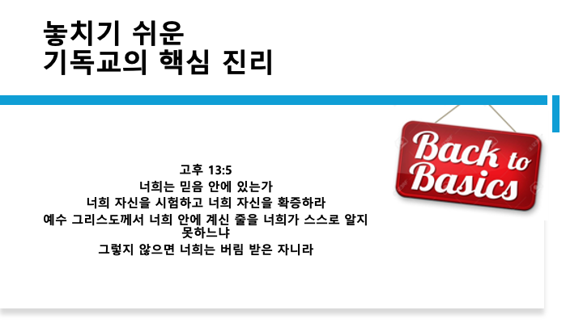
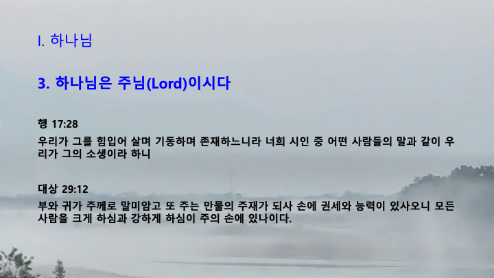
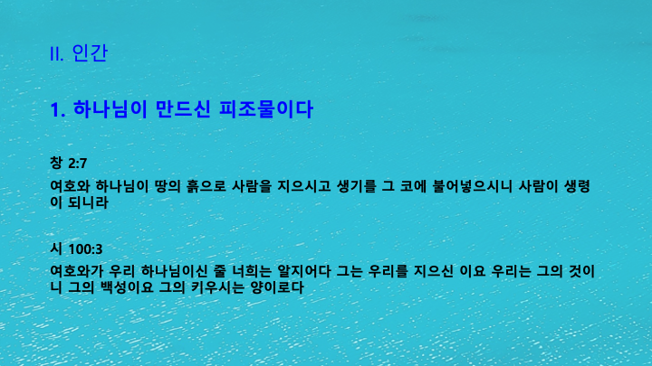
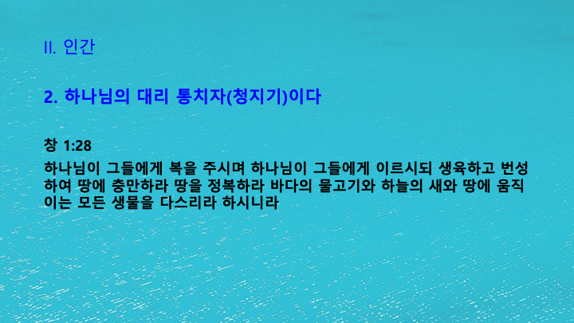
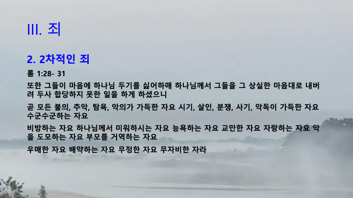
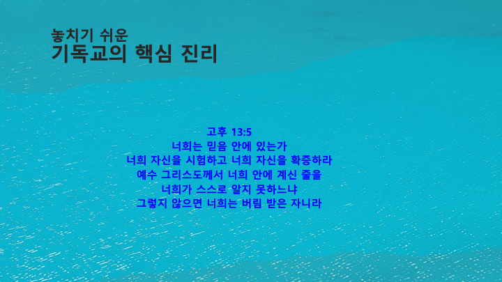

주일예배
2026년 8월 9일 주일예배
설교: 놓치기 쉬운 기독교의 핵심 진리 · 황을호 교수
1. 예배의 부름
인도자: 황성현 목사다같이 묵도한 후, 인도자의 기도로 예배를 시작합니다.
2. 찬양
- 시선
- 주님의 영광 나타나셨네
- 주의나라가 임할때
- 주하나님지으신 모든세계
- 예수 우리왕이여
3. 대표기도
곽태양 청소년4. 광고
- 주일예배는 오전 11시입니다.
- 10분 전부터 찬양이 시작됩니다.
- 금요성경모임이 금요일 저녁 7시 30분에 있습니다.
5. 성경봉독
고린도후서 13:5 (개역개정)
너희가 믿음 안에 있는가 너희 자신을 시험하고 너희 자신을 확증하라 예수 그리스도께서 너희 안에 계신 줄을 너희가 스스로 알지 못하느냐 너희가 스스로 알지 못하면 버림받은 자니라
6. 설교
놓치기 쉬운 기독교의 핵심 진리
설교자: 황을호 교수
설교 슬라이드 (총 26장 · 옆으로 스크롤해서 보실 수 있습니다)






7. 축도
황성현 목사
📌 다음 주 섬김이
대표기도 — 곽온유 어린이
안내 — 최홍숙 집사